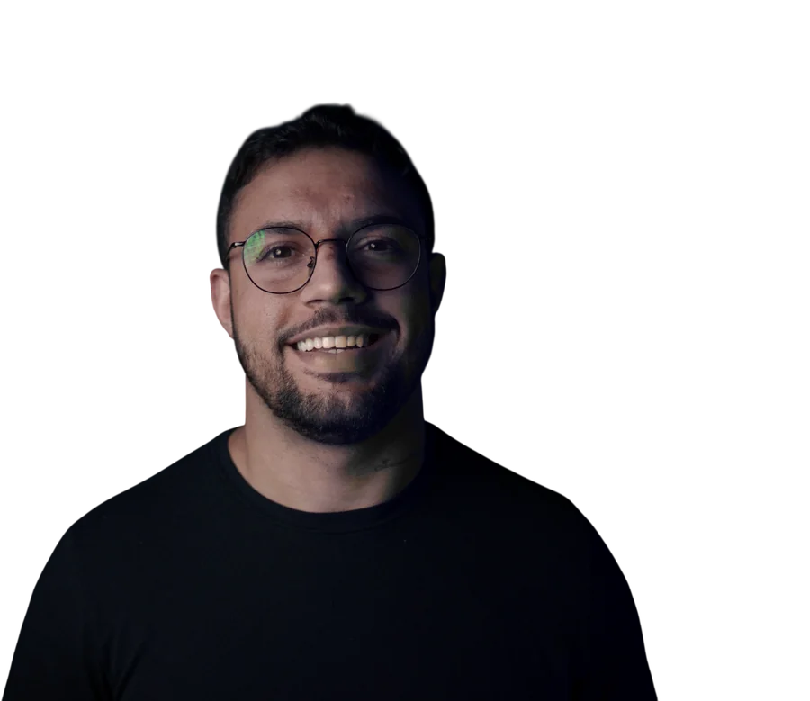
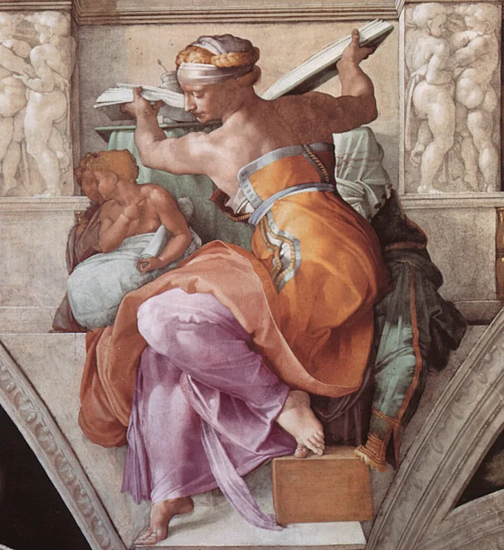
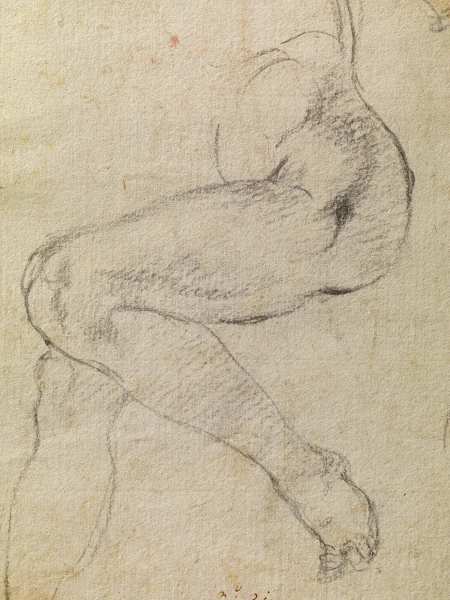

Diagnóstico de IA
Entendo como a sua empresa funciona e mostro onde a IA economiza mais tempo e dinheiro.
- Mapa dos processos que dá para automatizar
- Prioridades por impacto e esforço
- Plano com prazo e preço de cada automação
Sou desenvolvedor e crio automações com IA que tiram o trabalho repetitivo da sua equipe: atendimento, vendas, conteúdo e processos internos. Do primeiro esboço ao sistema funcionando.


Michelangelo passava meses estudando antes de pintar uma figura. Automação boa nasce do mesmo jeito: primeiro entender o seu negócio a fundo, depois escrever cada linha com cuidado, até a coisa funcionar sozinha, todo dia, sem ninguém lembrar que ela existe.
while (empresa.temTarefaRepetitiva()) {
tarefa = entender(processo)
automatizar(tarefa) // a equipe volta a pensar
}
Comece pelo diagnóstico e decida o resto depois, com o plano e o preço na mão.
Entendo como a sua empresa funciona e mostro onde a IA economiza mais tempo e dinheiro.
Construo as automações e ligo aos sistemas que você já usa.
A sua equipe aprende a usar IA no trabalho dela, com exemplos do seu negócio.
Para evoluir sem parar: ajustes, novas automações e suporte.
Antes de vender automação, automatizei o meu próprio negócio. É o mesmo trabalho que faço para clientes.
Instagram · atendimento
conteúdo · vídeo diário
vendas · pagamentos
ferramenta interna
// projetos de clientes entram aqui conforme forem autorizados
Antes de pintar o teto da Capela Sistina, ele desenhava estudos e depois cartões em tamanho real. Trabalho na mesma ordem.

Você conta o que toma tempo da sua equipe. Eu digo, com franqueza, se a IA resolve e por onde começar.
Mapeio os processos e entrego o plano em tamanho real: prioridades, prazo e preço fechado de cada automação.
Construo, testo com a sua equipe e deixo tudo documentado. Depois, se quiser, sigo acompanhando.
Sou Raphael Busquet. Há X anos trabalho com tecnologia, desenvolvendo sistemas, sites e integrações para empresas, como ….
Nas redes, explico IA para quem não é da área. Na consultoria, faço o caminho inverso: pego a necessidade do negócio e transformo em sistema que funciona, sem jargão no meio.
Não. Você explica como o trabalho é feito hoje; a parte técnica é comigo. No fim, a sua equipe recebe treinamento para usar o que foi construído.
Depende do tamanho do projeto. A primeira conversa é gratuita, e o diagnóstico termina com o preço fechado de cada automação, para você decidir sem surpresa.
Sim. O trabalho é online, com empresas no Brasil e em Portugal.
Uso contas e ferramentas da própria empresa sempre que possível, e definimos juntos o que pode ou não passar por uma IA.
A primeira automação costuma entrar em funcionamento logo depois do diagnóstico. O prazo de cada uma vem no plano.
Respondo pessoalmente em até 1 dia útil para marcar a conversa de 30 minutos.